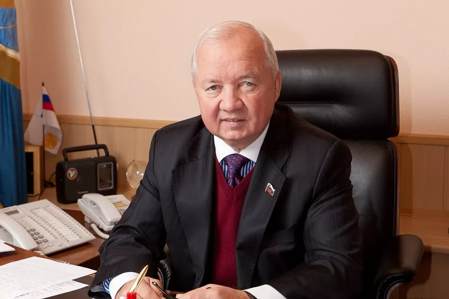
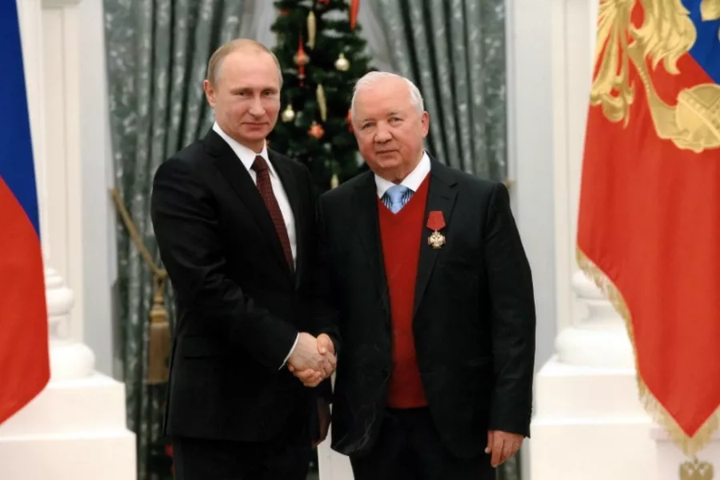

Назейкин А.Г.

Профессиональный опыт и стратегическое руководство в области защиты трудовых прав работников связи на государственном уровне.

Каждый элемент эмблемы — это дань уважения богатой истории отрасли и неразрывной связи поколений.
Отражает глобальный характер коммуникаций, масштабность предоставляемых услуг и неразрывную связь работников отрасли со всем миром.
Классический и один из старейших символов электросвязи и телеграфа. Еще с XIX века телеграф романтично называли «говорящей молнией».
Международный исторический символ почты. В старину почтальоны трубили в такой рожок, извещая о прибытии или отправлении почтовой кареты.
Указывает на государственную принадлежность и масштаб организации, действующей на территории всей огромной страны.
«Защита трудовых прав работников связи — это не только профессиональная обязанность, но и гражданская ответственность перед будущим страны.»
— Назейкин Анатолий Георгиевич
Многолетняя деятельность Назейкина Анатолия Георгиевича по защите социально-трудовых прав граждан и развитию профсоюзного движения в России отмечена высокими государственными наградами.
Внимание руководства страны подчеркивает особую значимость отрасли связи и людей, которые в ней работают.
